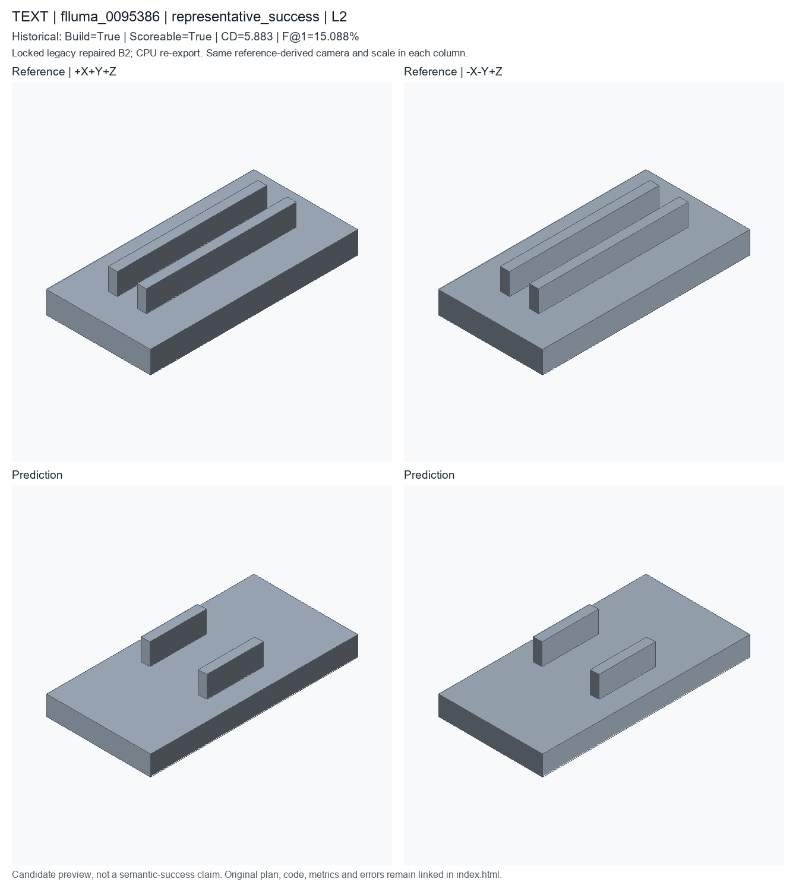

representative_success; L2; historical deployed repaired B2. Candidate status is unchanged.
Executable/scoreable case nearest complete-cohort F@1 percentile0.50, then CD percentile0.50; semantic accuracy not asserted
These are new CPU exports of locked historical code, not newly generated model predictions or recovered original temporary STEP files. Executable does not mean semantically accurate. Historical seed/checkpoint-byte binding remains unresolved.

A with one hole pattern with 4 ribbed support plate holes and paired support ribs, approximately 74.2 by 37.2 by 15.72 mm. A ribbed support plate with one hole pattern and paired support ribs.
PART flluma_0005100 CAT ribbed_support_plate UNITS mm SEED 20265614 PARAM height 37.2 MIN 12 MAX 80 SEM overall_height PARAM hole_radius 1.53 MIN 1 MAX 8 SEM hole_radius PARAM rib_height 7.72 MIN 2 MAX 14 EXPR thickness*0.94 SEM rib_height PARAM rib_length 20.14 MIN 12 MAX 100 EXPR width*0.276 SEM rib_length PARAM rib_offset_y 10.14 MIN 2 MAX 24 EXPR height*0.27 SEM rib_offset PARAM rib_width 3.14 MIN 2 MAX 12 EXPR max(2.0,height*0.085) SEM rib_width PARAM thickness 7 MIN 3 MAX 25 SEM thickness PARAM width 74.2 MIN 20 MAX 120 SEM overall_width F ribbed_support_plate_001 OP_RIBBED_SUPPORT_PLATE SEM ribbed_support_plate ROLE primary_body PARAMS height=@height hole_positions=[[-20.396,-9.3],[20.396,-9.3],[-20.396,9.3],[20.396,9.3]] hole_radius=@hole_radius rib_height=@rib_height rib_length=@rib_length rib_offset_y=@rib_offset_y rib_width=@rib_width thickness=@thickness width=@width END
# Literal first40 lines of executed prediction; full program is prediction.py
params = Parameters()
params.add('height', 37.2, min=12, max=80, semantic_type='overall_height')
params.add('hole_radius', 1.53, min=1, max=8, semantic_type='hole_radius')
params.add('rib_height', 7.72, min=2.0, max=14.0, expression='thickness * 0.94', semantic_type='rib_height')
params.add('rib_length', 20.14, min=12.0, max=100.0, expression='width * 0.276', semantic_type='rib_length')
params.add('rib_offset_y', 10.14, min=2.0, max=24.0, expression='height * 0.27', semantic_type='rib_offset')
params.add('rib_width', 3.14, min=2.0, max=12.0, expression='max(2.0, height * 0.085)', semantic_type='rib_width')
params.add('thickness', 7, min=3, max=25, semantic_type='thickness')
params.add('width', 74.2, min=20, max=120, semantic_type='overall_width')
part = Part('flluma_0005100', category='ribbed_support_plate', parameters=params, seed=20265614, sample_id='flluma_0005100', units='mm')
ribbed_plate = part.ribbed_support_plate(name='ribbed_support_plate_body', width=params['width'], height=params['height'], thickness=params['thickness'], hole_radius=params['hole_radius'], hole_positions=[[-20.396, -9.3], [20.396, -9.3], [-20.396, 9.3], [20.396, 9.3]], rib_length=params['rib_length'], rib_width=params['rib_width'], rib_height=params['rib_height'], rib_offset_y=params['rib_offset_y'], semantic_type='ribbed_support_plate')
__all__ = ['part']